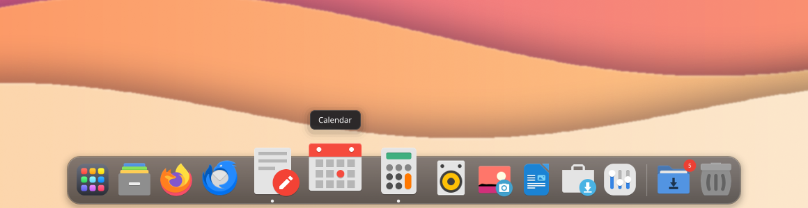
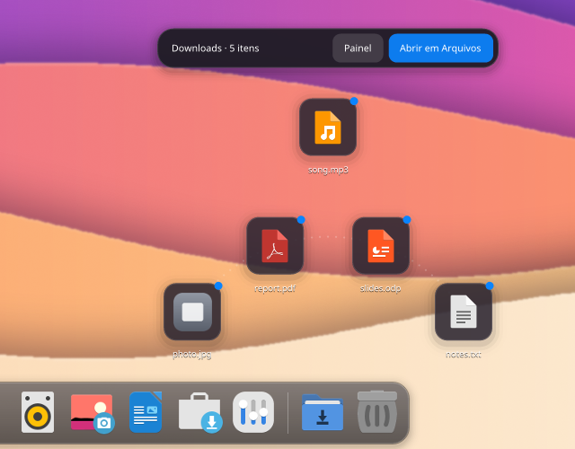
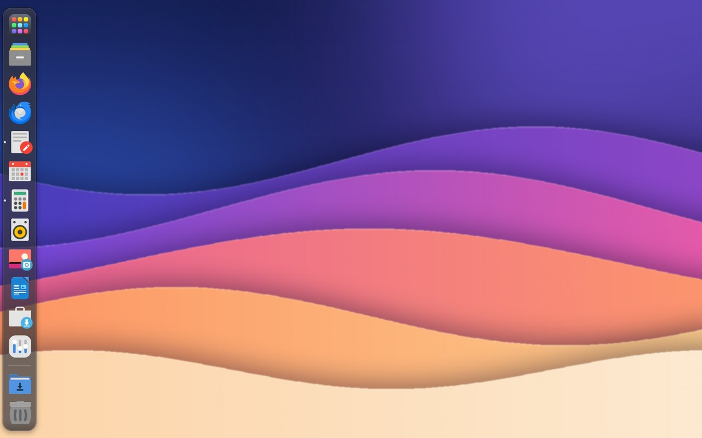

Fish-eye magnification
Icons grow along a cosine curve as the pointer approaches, and their neighbours slide aside to make room.

rdock
A macOS-style dock for X11, written in pure Rust. No GTK, no Qt. It draws every pixel itself and rests at 0% CPU.
Try it. Point at the dock to magnify it, click an app to launch it, and open the Downloads stack.
Everything you expect from a dock, plus the details that make it feel alive. Every animation runs on damped springs.
Icons grow along a cosine curve as the pointer approaches, and their neighbours slide aside to make room.

Drop a folder on the dock. Up to 9 items fan out in an orbit. Bigger folders open a panel with search, sorting, a preview and full keyboard control.

Every installed app in a full-screen grid over a blurred copy of your desktop, with sliding pages and search as you type.

Rest on an open app to see live thumbnails of its windows and their workspaces. Click to focus, × to close, scroll to cycle.
While you drag a file, the apps that can open it rise and the rest fade. Drop it on an app, a stack or the Trash.
An icon keeps bouncing until its window appears. A dot marks every open app; two dots mean two windows or more.
Size, magnification, position, text size, theme and hiding, plus switches for every behaviour. Nothing to save, nothing to restart.

Put the dock on any edge. It can stay visible, always hide, or hide smartly: only when the active window touches it.

Right-click an app to reopen what it opened last, read straight from recently-used.xbel.
Reorder icons, drag one away to remove it, or drop an app from the Launchpad or a .desktop file to pin it.
Partial redraws, shared-memory uploads and cached icons keep an animated frame at about 0.5–2 ms and the Launchpad at 60 fps. When your desktop turns animations off, rdock fades instead of springing.
Draw the shelf as it looks at the bottom of the screen. rdock scales it to the shelf's height, keeps the ends and tiles the middle. The theme buttons under the demo use the real files.
~/.config/rdock/themes/ and pick it in Preferences.Small, native and dependency-light.
PutImage fallback..desktop files and your system icon theme (SVG and PNG). Launches through gio.Build it from source in under a minute. If another dock such as Plank is running, quit it first.
git clone https://github.com/berdfandrade/rdock.git cd rdock cargo build --release ./target/release/rdock
On first launch rdock adds itself to your applications menu, where it opens Preferences.
cargo install --path . mkdir -p ~/.config/autostart cat > ~/.config/autostart/rdock.desktop <<EOF [Desktop Entry] Type=Application Name=rdock Exec=$HOME/.cargo/bin/rdock X-GNOME-Autostart-enabled=true X-GNOME-Autostart-Delay=2 EOF
mkdir -p ~/.local/share/rdock/themes && cp themes/*.png ~/.local/share/rdock/themes/